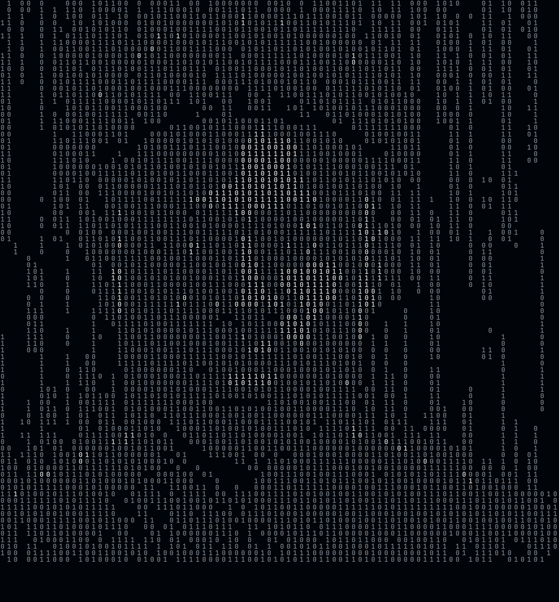
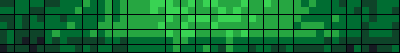

VIVIEN AGUEOUNDE•2vivien
•Fullstack Architect & AI Builder
BENIN // 229
SYSTEM: ONLINE
FOCUS: BUILDING
┌─ MATRIX PROTOCOL ─┐
│ STATUS: ACTIVE │
│ NODE: BJ-COT-01 │
│ UPTIME: 99.9% │
└───────────────────┘
[010101]
COORDINATES
6.3654° N
2.4183° E
CODE IS
MATRIX
IS CODE
MATRIX
IS CODE

┤ SCAN_Y: 0.42FACE_MAP: 87%
BINARY_DENSITY: HIGH ┤010101 101010 ┤
CODE IS MATRIX
ARCHITECT•SYSTEM•MATRIX
[SYSTEM LOG]
21:38:24 // INIT
21:38:25 // LOAD MATRIX
21:38:26 // FACE SYNC ✓
21:38:27 // RENDER OK
STACK TRACE:
→ fullstack.ts
→ ai.builder.js
→ matrix.core.rs
→ benin.node.go
WHO I AM
[BENIN]Vivien A.
@2vivien • Cotonou, BJ
FULLSTACK ARCHITECT
Building with intention. Obsessed with systems, matrix protocols, and products that feel alive. From Benin to the world.
MANIFESTO
“Je ne code pas, je tisse des systèmes. Chaque ligne est une intention.”
CORE SYSTEM / ARCHITECTURE MANIFESTO
v2.4.101PROTOCOL
- Every product is a system, not a feature.
- Code is matrix: structure reveals intent.
- Ship fast, architect for 10 years.
- Benin mindset: constraint → creativity.
02STACK DEPTH
FRONTEND
React / Next / Three / WebGL
BACKEND
Node / Go / Rust / Python
AI LAYER
LLMs / RAG / Agents / Vector
INFRA
Docker / K8s / Edge / 229
TECH STACK
[19+ TOOLS]React
Next.js
TypeScript
Node.js
Python
Rust
Go
Postgres
Redis
Docker
K8s
GraphQL
Tailwind
Three.js
WebGL
Vercel
OpenAI
LangChain
Figma
STACK_DEPTH: DEEPCOVERAGE: FULLSTACK
GITHUB STATS 2024
COMMITS1,847 contributionsin 2024

JanAprJulOctDec
REPOS
87
STARS
1.2k
STREAK
142d
FORKS
56
JavaScript38%●●●●●●●●●●●●●●
Python28%●●●●●●●●●●
TypeScript17%●●●●●
Rust9%●●●
Go5%●●
Other3%●
HOW I WORK
PROTOCOL01
INTENT FIRST
Je commence par le pourquoi, pas le comment.
02
MATRIX THINKING
Chaque décision crée une contrainte qui libère la suivante.
03
BUILD IN PUBLIC
Documenter → Partager → Itérer. La transparence est un levier.
RECENT ACTIVITY
LIVE FEED- 2h ago feat: matrix face renderer v2 → binary sampling + glitch
- 5h ago ship: benin-node deployment CLI, 229ms cold start
- 1d ago refactor: AI builder protocol, intent → system → ship
- 2d ago docs: architecture manifesto, construire avec intention
- 3d ago fix: contribution graph dot precision
CURRENT FOCUS
2025.Q4Designing MATRIX_OS — an AI-native workspace where code, design, and docs are the same binary stream. Exploring how Benin tech culture can reshape global tooling.
SYSTEM METRICS
REALTIMECPU_LOAD42%
MEMORY6.2 / 16 GB
BUILD_TIME229ms
UPTIME
99.97%
LATENCY
14ms
⚑ NODE_LOCATION: BENIN
Cotonou • 6.3654° N, 2.4183° E • GMT+1
BJWEST AFRICA HUB
PHILOSOPHY
Construire avec intention — chaque ligne de code est une décision architecturale.
MATRIXEST. 2020 • COTONOU • BJ